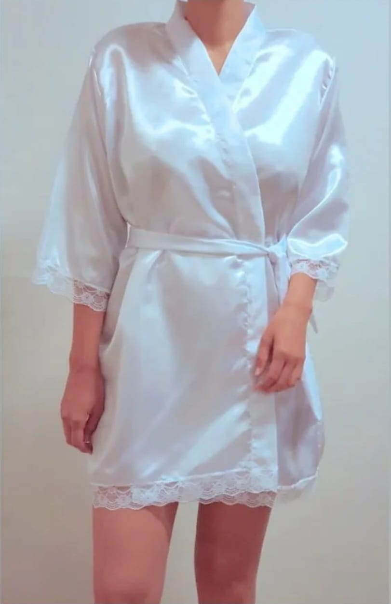
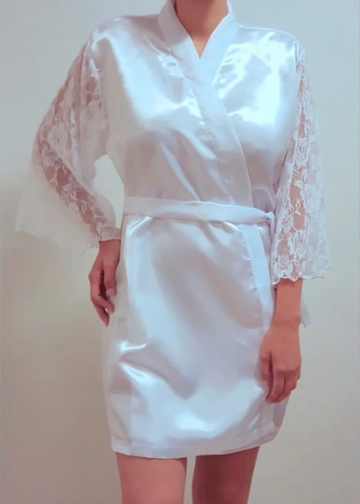

Modelo Gala
Confeccionada en saten elastizado, con estampado/bordado personalizado
Modelo Lilah
Confeccionada en saten elastizado con terminacion en puntilla en ruedo de largo y mangas, con estampado/bordado personalizado
Modelo Adara
Confeccionada en saten elastizado con mangas en delicado encaje, con estampado/bordado personalizado